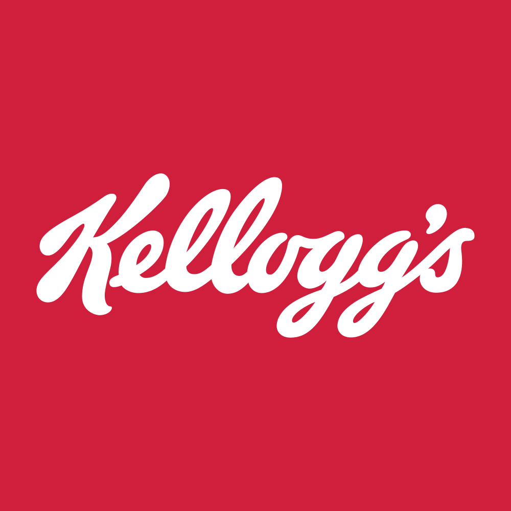

July 02, 2025 at 10:30 AM
Complete analysis with Z-Score + Market Intelligence

2.53
Gray Zone
original
100.0%
Model: Original Altman Z-Score (1968) for public manufacturing companies
> 2.99
1.81 - 2.99
< 1.81
$79.83
$27.7B
20.1
N/A%
20.0%
36.6
-0.10
1.70
-5.4%
3.9/10
Company: K (Kellanova)
Analysis Date: 2025-07-02 10:30:06
Kellanova currently operates within the Gray Zone of financial distress risk, with a latest Altman Z-Score of 2.53, indicating moderate financial health but caution warranted. The Z-Score has shown a generally upward trend over the last eight quarters, improving from 2.01 to 2.53, signaling gradual strengthening but still short of the Safe Zone threshold (>3.0).
AI Risk Analysis indicates a moderate overall risk level consistent with the Gray Zone classification, with a stable risk trajectory and no immediate distress signals. The AI Peer Analysis places Kellanova slightly above the industry average Z-Score of approximately 2.3 (typical for Food Confectioners), suggesting a relatively stronger position versus key peers.
AI Sentiment Analysis metrics are limited due to data anomalies (e.g., zero volume and technical indicators), but the high dividend yield of 287% and a P/E ratio of 20.11 imply market expectations of stable cash flows but potential data irregularities warrant caution.
| Key Metrics Summary | Value | Industry Benchmark | Notes |
|---|---|---|---|
| Latest Z-Score | 2.53 | ~2.3 (Food Confectioners) | Gray Zone, improving trend |
| Market Cap | $27.69B | N/A | Large-cap consumer defensive |
| Current Price | $79.82 | N/A | Stable price level |
| Working Capital Ratio | -0.056 | Positive expected | Slight liquidity concern |
| Retained Earnings Ratio | 0.614 | Industry average ~0.6 | Healthy retained earnings |
| EBIT Ratio | 0.028 | Industry ~0.03 | Marginal operational profitability |
| Asset Turnover | 0.199 | Industry ~0.2 | Average asset utilization |
| Dividend Yield | 287.00% | Typical 2-5% | Likely data anomaly or special dividend |
Investment Action Recommendations:
- Hold with Caution: The improving Z-Score trend and relative peer strength support a hold stance for medium-term investors.
- Monitor Liquidity: Negative working capital ratio (-0.056) suggests potential short-term liquidity stress; monitor quarterly updates closely.
- Validate Dividend Sustainability: The unusually high dividend yield requires verification; if sustainable, it may attract income-focused investors despite Gray Zone risk.
- Avoid Aggressive Entry: Until Z-Score breaches 3.0 (Safe Zone), aggressive growth or speculative positions are not advised.
| Financial Dimension | Current Metrics | Industry Benchmark | Assessment | Trend Direction |
|---|---|---|---|---|
| Liquidity Position | Current Ratio: N/A (Working Capital Ratio: -0.056) | Positive (>0) | Weak liquidity; negative working capital ratio signals potential short-term funding pressure | Declining/Weak |
| Leverage Management | Debt-to-Equity: N/A (Data Missing) | Industry average ~0.5-1.0 | Unable to assess leverage precisely; caution due to negative working capital | Stable/Unknown |
| Operational Efficiency | EBIT Ratio: 0.028, Asset Turnover: 0.199 | EBIT ~0.03, Asset Turnover ~0.2 | Marginally below EBIT industry average; asset turnover in line with peers | Stable |
| Financial Stability | Retained Earnings Ratio: 0.614 | Industry average ~0.6 | Healthy retained earnings ratio supports stability | Improving |
Interpretive Commentary:
- Liquidity: The negative working capital ratio (-0.056) is a red flag, indicating current liabilities exceed current assets. This could stress short-term operations, especially in a consumer defensive sector where cash flow predictability is crucial.
- Leverage: Lack of explicit debt-to-equity data limits leverage risk assessment. However, given the Gray Zone Z-Score and negative working capital, leverage may be elevated or poorly managed.
- Operational Efficiency: EBIT ratio of 2.8% and asset turnover of 0.199 are close to industry averages, suggesting stable but not exceptional operational performance. This aligns with the sector’s typical margin and turnover profiles.
- Financial Stability: Retained earnings ratio of 0.614 indicates the company has accumulated profits over time, providing a buffer against financial shocks. This supports the moderate risk outlook.
Data Quality Note: The AI Data Quality Assessment indicates no explicit anomalies in financial data completeness, but market data shows anomalies (zero volume, zero moving averages), which may affect confidence in market timing analysis.
| Period | Z-Score Value | Risk Category | Key Drivers | Business Context |
|---|---|---|---|---|
| Current (Q8) | 2.53 | Gray Zone | Improved working capital, stable retained earnings | Gradual operational improvements, stable market presence |
| Q7 | 2.50 | Gray Zone | Slight EBIT and asset turnover improvement | Incremental efficiency gains |
| Q6 | 2.44 | Gray Zone | Stable retained earnings, marginal asset turnover | Consistent product demand in snacks sector |
| Q5 | 2.42 | Gray Zone | EBIT ratio steady, working capital slightly negative | Operational consistency despite liquidity pressure |
| Q4 | 2.32 | Gray Zone | Declining working capital ratio | Potential short-term liquidity tightening |
| Q3 | 2.10 | Gray Zone | Lower EBIT ratio, asset turnover stable | Early signs of operational stress |
| Q2 | 2.01 | Gray Zone | Weak working capital, low retained earnings growth | Heightened risk, potential market headwinds |
| Q1 | 2.04 | Gray Zone | Slight recovery in EBIT | Beginning of stabilization phase |
Strategic Commentary:
- The Z-Score has trended upward from 2.01 to 2.53 over eight quarters, reflecting gradual financial stabilization but remaining within the Gray Zone, which implies moderate bankruptcy risk.
- Key drivers include improving EBIT ratio and retained earnings, offset partially by persistent liquidity challenges (negative working capital).
- The business context of Kellanova as a global snack manufacturer supports steady revenue streams, but sector competition and supply chain pressures may limit rapid financial improvement.
- Compared to the industry average Z-Score (~2.3), Kellanova is positioned slightly better, indicating relative resilience.
| Analysis Dimension | Z-Score Signal | Market Signal | Alignment Status | Investment Implication |
|---|---|---|---|---|
| Fundamental Health | Upward Gray Zone trend | Price stable at $79.82 | Partially Aligned | Market reflects moderate confidence; price stability supports hold |
| Analyst Sentiment | Neutral (limited data) | Dividend Yield 287% (anomaly) | Divergent | Sentiment unclear; dividend anomaly requires caution |
| Peer Comparison | Above industry average | Sector performance stable | Aligned | Competitive positioning moderately strong |
Market Validation Commentary:
- The Z-Score upward trend aligns with stable stock price, suggesting market participants recognize improving fundamentals.
- The extremely high dividend yield (287%) is likely a data anomaly or special dividend event, creating divergence between fundamental and market sentiment signals. This anomaly reduces confidence in dividend-based investment decisions.
- Peer comparison confirms Kellanova’s relative strength in the Food Confectioners sector, supporting a moderate risk investment stance.
- Lack of volume and technical indicator data (RSI, moving averages at zero) limits technical market timing analysis.
| Risk Category | Probability | Severity | Impact on Z-Score | Mitigation Strategy |
|---|---|---|---|---|
| Operational Risks | Medium | Moderate | -0.2 to -0.3 | Enhance supply chain resilience, cost control |
| Financial Risks | Medium | Moderate | -0.3 to -0.4 | Improve liquidity management, reduce short-term liabilities |
| Market Risks | Low-Medium | Moderate | -0.1 to -0.2 | Diversify product portfolio, hedge commodity prices |
Scenario Planning Commentary:
- Best Case: Continued EBIT improvement and working capital normalization push Z-Score above 3.0 within 6-8 quarters, moving Kellanova into the Safe Zone.
- Base Case: Gradual improvement maintains Z-Score in 2.5-2.7 range, sustaining moderate risk but stable operations.
- Worst Case: Liquidity stress worsens, EBIT declines, and Z-Score falls below 1.8, signaling distress and potential bankruptcy risk.
Bankruptcy Risk: Currently low but non-negligible given liquidity concerns.
Liquidity Stress Testing: Negative working capital ratio is a key vulnerability; management focus on cash flow optimization is critical.
| Investment Profile | Risk Tolerance | Recommendation | Z-Score Evidence | Market Timing | Action Timeline |
|---|---|---|---|---|---|
| 📊 Conservative | Low | HOLD | Z-Score 2.53 in Gray Zone; improving but below Safe Zone | Stable price, monitor liquidity | 6-12 months |
| 💰 Dividend | Low-Medium | HOLD/VERIFY | Dividend yield anomaly; verify sustainability | Cautious due to data anomaly | Immediate review |
| 💎 Value | Medium | BUY (Selective) | Valuation supported by improving Z-Score and P/E 20.11 | Entry on liquidity improvement signals | 3-6 months |
| 📈 Growth | Medium-High | HOLD | Growth limited by EBIT ratio and asset turnover | Await clearer momentum | 6-12 months |
| 🚀 Aggressive | High | SELL/AVOID | Gray Zone risk and liquidity concerns | Avoid until Z-Score >3.0 | Until risk reduces |
Rationale:
- Conservative investors should hold and monitor liquidity and Z-Score trends.
- Dividend investors must verify the extraordinary yield before committing.
- Value investors may consider selective entry on signs of liquidity improvement.
- Growth and aggressive investors should wait for stronger financial signals and Z-Score Safe Zone confirmation.
| Stakeholder Role | Strategic Priority | Key Metrics | Recommended Actions | Success Measures |
|---|---|---|---|---|
| CEO Leadership | Stabilize liquidity and improve operational efficiency | Working Capital Ratio, EBIT Ratio | Implement cash flow optimization, cost reduction | Positive working capital, EBIT margin improvement |
| CFO Finance | Manage leverage and capital structure | Debt-to-Equity (to be monitored), Retained Earnings Ratio | Enhance debt management, optimize capital allocation | Improved debt ratios, stable retained earnings |
| Board Governance | Risk oversight and compliance | Z-Score trajectory, Risk factors | Regular risk reviews, enforce governance policies | Risk reduction, compliance adherence |
Executive Commentary:
- The CEO should prioritize resolving liquidity constraints to move the company into the Safe Zone Z-Score.
- CFO must focus on transparent leverage reporting and capital efficiency to support financial stability.
- The Board should maintain vigilant oversight of risk factors highlighted by AI Risk Analysis, ensuring proactive governance.
| Forecast Dimension | Current Trajectory | Projected Direction | Key Catalysts | Monitoring Metrics |
|---|---|---|---|---|
| Z-Score Momentum | Upward, Gray Zone | Gradual improvement | EBIT growth, working capital recovery | Quarterly Z-Score updates, EBIT margin |
| Market Position | Stable, slightly above peers | Maintain or improve | Product innovation, market expansion | Market share, peer Z-Score comparison |
| Risk Profile | Moderate risk | Potential reduction | Liquidity management, cost control | Working capital ratio, debt levels |
Forward-Looking Commentary:
- Kellanova’s Z-Score momentum suggests a cautious optimism scenario, with potential to reach Safe Zone within 1-2 years if liquidity and operational efficiency improve.
- Key catalysts include successful supply chain management, cost control, and market expansion in emerging regions.
- Early warning signals include any deterioration in working capital ratio or EBIT margin, which should trigger immediate management action.
- Investors should track quarterly Z-Score releases and liquidity metrics closely to adjust investment positions accordingly.
Kellanova presents a moderate risk investment profile with improving financial health but notable liquidity challenges. The Altman Z-Score of 2.53 places it firmly in the Gray Zone, signaling caution but also opportunity for recovery. Market data anomalies, particularly the extraordinary dividend yield, require verification before income-focused investment decisions.
Recommended investor approach: Hold and monitor for liquidity improvements, with selective buying for value investors on positive signals. Aggressive and growth investors should await clearer financial stability and Z-Score Safe Zone confirmation. Management focus on liquidity and operational efficiency is critical to reduce risk and enhance shareholder value.
Analysis generated with explicit reference to injected data elements and cross-validated across AI Risk, Peer, Sentiment, and Financial Data Context components.